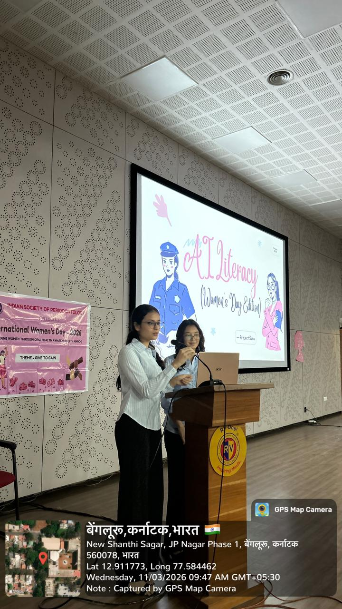
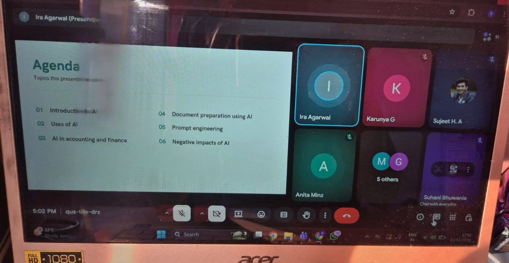
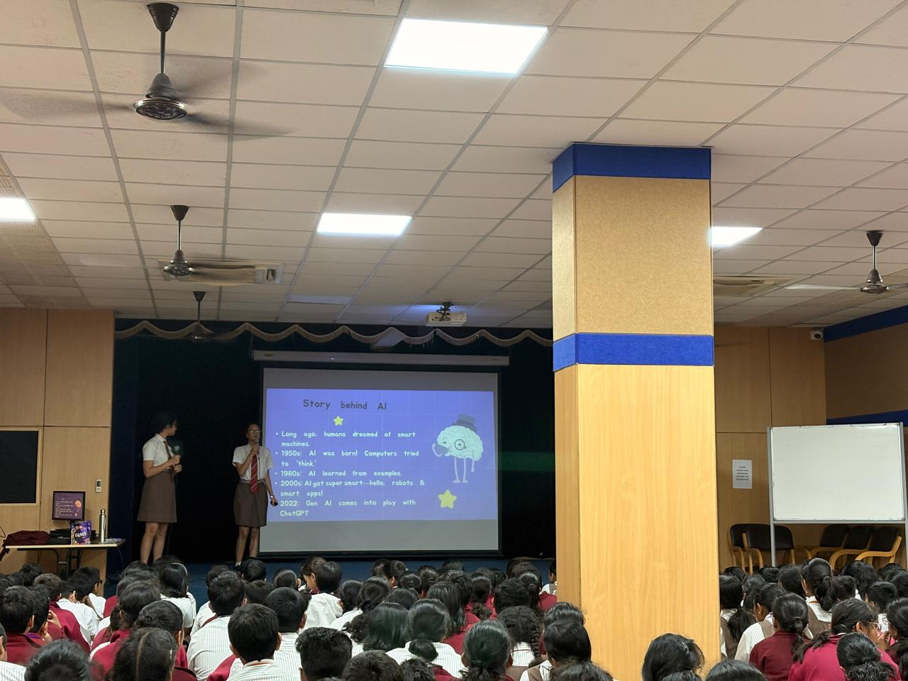
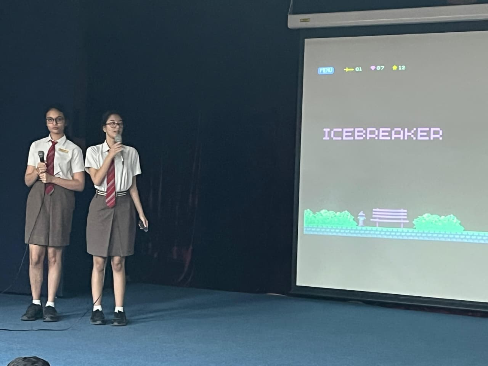

We were guest speakers on their women's day celebration. Our session focused on women's role in AI, gender bias, and the future of medicine in AI.

We held our first online session for V&K, a Chartered Accountants firm. We discussed the involvment of AI in finance as well as document preparation.

We conducted our first session for grades 5 and 6 on basic prompt engineering. It was an engaing and interactive session.

We had a session for grades 7 and 8 in NPS HSR. We explored generative AI and prompt engineering in detail. We received extremely positive feedback.